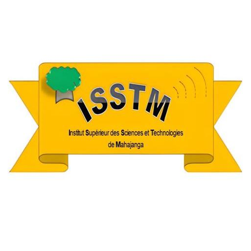

Parcours

Après l’obtention de mon baccalauréat, j’ai décidé de m’orienter vers la filière informatique.
Dans un monde de plus en plus dominé par la technologie, ce choix s’est imposé naturellement à moi. Je souhaitais comprendre comment fonctionnent les systèmes numériques et apprendre à créer des solutions innovantes.
Choisir l’informatique a été l’une des meilleures décisions de mon parcours.
Actuellement, j’ai déjà acquis des bases solides en programmation et je développe progressivement mes compétences à travers des projets pratiques.